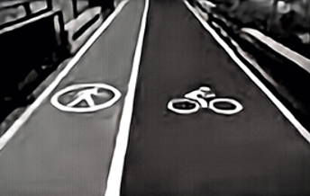
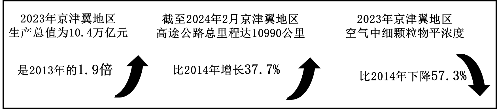
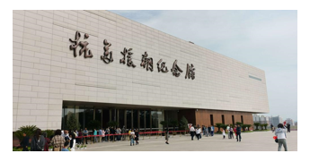

2024年北京市中考政治真题 原卷解析
2024年北京市中考道德与法治真题
姓名____准考证号考场号座位号
考生须知
1．本试卷共8页，共两部分，共20题，满分70分。考试时间70分钟
2．在试卷和草稿纸上准确填写姓名、准考证号、考场号和座位号。
3．试题答案一律填涂或书写在答题卡上，在试卷上作答无效。
4．在答题卡上，选择题用2B铅笔作答，其他试题用黑色字迹签字笔作答。
5．考试结束，将本试卷、答题卡和草稿纸一并交回。
第一部分
本部分共15题，每题2分，共30分。在每题列出的四个选项中，选出最符合题目要求的一项。
1. 2024年1月19日，“____”表彰大会在北京召开。这是党中央、国务院首次对这一奖项开展评选表彰。获奖个人和团队不断突破关键核心技术，取得一批先进技术成果，为加快实现高水平科技自立自强作出突出贡献。（ ）
A. 共和国勋章B. 人民楷模C. 国家工程师奖D. 中国青年五四奖章
【答案】C
【解析】
【详解】本题考查时政，解析略。
2. 某班开展“我的自画像”活动，两位同学交流了他们的想法。
每个人都不一样，我关注自己的特点，记录内心活动和情绪表现，“画”出独特的我。 | 旁观者清，我主动倾听别人的意见，结合具体情况，“画”出全面的我， |
| |
以上对话告诉我们（ ）
A. 生命是独特的，要关心身边每一个人
B. 可通过自我评价和他人评价认识自己
C. 要加强沟通，以同学们的意见为标尺
D. 情绪会相互感染，要用恰当方式表达
【答案】B
【解析】
【详解】本题考查正确认识自己的方法、正确对待他人评价的方法。
B：依据教材知识，分析题文，第一位同学通过关注自己的特点、记录内心活动和情绪表现来“画”出独特的自己，体现了自我评价；第二位同学通过主动倾听别人的意见，结合具体情况来“画”出全面的自己，体现了他人评价，这告诉我们可以通过自我评价和他人评价认识自己，故B符合题意；
AD：题文未体现生命是独特的，要关心身边每一个人；情绪会相互感染，要用恰当方式表达，故AD不符合题意；
C：同学们的意见未必准确，我们要有自己独到的见解，故C说法错误；
故本题选B。
3. “青春”一词来自《楚辞》，意为万物葱郁，青绿茂盛之时。有人说，青春蕴含无穷潜能，青春孕育无限希望，青春追求光辉的理想，青春奋进的步伐永不停息，这告诉我们要（ ）
A. 己所不欲，勿施于人B. 施惠毋念，受恩莫忘
C. 功崇惟志，业广惟勤D. 求同存异，以礼待人
【答案】C
【解析】
【详解】本题考查对青春的认识。
C：青春追求光辉的理想，青春奋进的步伐永不停息，告诉我们要不断追求自己的梦想，不断让自己变得更好；功崇惟志，业广惟勤，意思是取得伟大的功业，是由于有伟大的志向，完成伟大的功业，在于辛勤不懈地工作，故C符合题意；
A：己所不欲，勿施于人，意思是指自己不愿意的，不要施加给别人，告诉我们要学会换位思考，故A不符合题意；
B：施惠毋念，受恩莫忘，意思是对人施了恩惠，不要记在心里，受了他人的恩惠，一定要常记在心，告诉我们要学会感恩，故B不符合题意；
D：求同存异，意思是找出共同点，保留不同意见；以礼待人，意思是对人要有礼貌，告诉我们要宽容他人、做文明有礼的人，故D不符合题意；
故本题选C。
4. “白天上班，晚上学艺”，上夜校正在成为青年人新的生活方式。青年夜校有非遗制作、电影鉴赏、录制编辑、人工智能等课程，为青年人提供了多样的休闲生活和发展可能。上夜校有助于青年人（ ）
①加强学习，不断提升自身素质②释放压力，避免负面情感产生
③编织梦想，防止未来遇到挫折④充盈生命，丰富人生阅历体验
A. ①②B. ①④C. ②③D. ③④
【答案】B
【解析】
【详解】本题考查学习的意义、充盈生命。
①④：青年夜校为青年人提供了多样的休闲生活和发展可能，体现了上夜校对青年人的成长具有重要意义；依据教材知识可知，上夜校有助于青年人加强学习，不断提升自身素质，充盈生命，丰富人生阅历体验，故①④说法正确；
②：负面情感难以避免，故②说法错误；
③：人生难免有挫折，“防止未来遇到挫折”不现实，故③说法错误；
故本题选B。
5. 交通警察走进校园开展“交通安全”普法活动，宣讲了以下内容。
◇道路文通安全法实施条例规定，驾驶机动车不得有拨打接听手持电话，观看电视等妨碍安全驾驶的行为。 ◇车辆以100公里的时速行驶时，每秒钟会驶出28米左右，如果分心两秒钟，车辆就能驶出将近60米，容易发生危险。 |
交通警察的宣讲让我们认识到（ ）
①上述行为是不负责任的行为，需要社会成员共同执法
②上述行为属于一般违法行为，需要承担刑事责任
③要珍爱生命，增强道路交通安全意识
④要发自内心地尊崇法律，自觉规范行为
A. ①②B. ①④C. ②③D. ③④
【答案】D
【解析】
【详解】本题考查敬畏生命、树立法治意识。
③④：驾驶机动车不得有拨打接听手持电话，观看电视等妨碍安全驾驶的行为；如果分心两秒钟，车辆就能驶出将近60米，容易发生危险；体现了安全驾驶的重要性；让我们认识到要珍爱生命，增强道路交通安全意识，要发自内心地尊崇法律，自觉规范行为，故③④说法正确；
①：社会成员没有执法权，行政机关才有执法权，故①说法错误；
②：题干中的行为如果造成严重后果的话，可能是犯罪，一般违法行为不需要承担刑事责任，故②说法错误；
故本题选D。
6. 移动互联时代，人人都可以是“评论员”。而对大大小小的热点话题，在没有完全了解事情真相的情况下，如果仅凭感觉或表面现象想当然地发声，很多时候未见得准确。对此，做一名负责任的网络“评论员”，应该（ ）
①以理性的态度全面、辩证地看待问题
②培养创造热情，追求个性表达
③加强独立思考，培养批判性思维
④利用网络节约时间成本，提高效率
A ①③B. ①④C. ②③D. ②④
①③B. ①④C. ②③D. ②④
【答案】A
【解析】
【详解】本题考查独立思考、批判性思维、合理利用网络。
①③：在网络时代，人人能够参与信息发布，信息变得丰富的同时，也出现了一些虚假的、不良的信息；对热点话题，如果仅凭感觉或表面现象想当然地发声，很多时候未见得准确，所以做一名负责任的网络“评论员”，应该以理性的态度全面、辩证地看待问题，要加强独立思考，培养批判性思维，不盲目从众，故①③说法正确；
②：我们要培养创造热情，但不能追求个性表达，要追求事实真相，故②说法错误；
④：利用网络确实可以节约时间成本，提高效率，但不是对负责任的网络“评论员”的要求，故④不符合题意；
故本题选A。
7. 健康生活理念深入人心，人们骑行和步行的需求日益增加。为让大家拥有更好的体验，不少公园将原有的混行路道，调整为自行车专用道和步行专用道，但个别人随意乱用，影响他人安全。对此，下列认识正确的是（ ）

①随着社会生活的变化，公园改进完善规则
②公园赋予骑行者和步行者平等的社会经济权利
③专用道使用者应自觉遵守规则．加强自律
④人们有使用道路的权利，可按个人意愿任意使用
A. ①②B. ①③C. ②④D. ③④
【答案】B
【解析】
【详解】本题考查自觉遵守规则、积极改进规则、公民行使权利的界限。
①：为了满足人们骑行和步行的需求，公园将原有的混行路道调整为自行车专用道和步行专用道，体现了随着社会生活的变化，公园在改进和完善规则，以适应新的需求，故①符合题意；
③：个别人随意乱用专用道，影响他人安全，说明使用者应该自觉遵守规则，加强自律，故③符合题意；
②：题文未体现公园赋予骑行者和步行者平等的社会经济权利；骑行和步行不属于社会经济权利，故②不符合题意；
④：人们有使用道路的权利，但必须遵守公园的规定，不能随意乱用，影响他人安全，故④说法错误；
故本题选B。
8. 某同学在准备“千年运河万里长城”主题演讲时，搜集到相关素材。
“一河越千载”，京杭大运河是世界上最长的人工运河，是世界奇迹，它是中华民族的伟大水利工程，反映出东方文明在水利技术方面的杰出成就 | 长城是人类历史上宏伟壮丽的建筑奇迹和无与伦比的历之文化景观，翻崇山峻岭、穿沙漠戈壁，纵横数万里，它在中华大地上留下雄浑有力的身影。 |
以下最适合作为该同学演讲题目的是（ ）
A. 灿烂的中华文明独具魅力B. 中华美德万年长
C. 吸收外来，面向未来D. 山清水秀，留住乡愁
【答案】A
【解析】
【详解】本题考查中华文化。
A：依据教材知识可知，中华文化源远流长、博大精深；题干中，京杭大运河反映出东方文明在水利技术方面的杰出成就，长城是人类历史上宏伟壮丽的建筑奇迹和无与伦比的历史文化景观，共同体现了灿烂的中华文明独具魅力，故A说法正确；
B：题干体现的是中华文化，没有体现中华美德，故B不符合题意；
C：题干体现的是中华文化，没有体现外来文化，故C不符合题意；
D：题干体现的是中华文化，没有体现山清水秀，留住乡愁，故D不符合题意；
故本题选A。
9. “我们生于伟大的祖国，在国家需要时，就要肩负起保家卫国的使命。”“维护国家主权、领土完整，捍卫国家尊严，需要强大的国防。我们要成为国泰民安的守护者！”大学生们发出铮铮誓言，怀揣报国梦踏上军旅征途。这些誓言启示我们（ ）
①维护国家安全，始终把国家利益放在第一位
②进行职业选择要考虑自己的兴趣爱好
③增强责任意识、自觉履行义务
④国土安全涵盖国家安全的全部内容
A. ①③B. ①④C. ②③D. ②④
【答案】A
【解析】
【详解】本题考查维护国家安全、捍卫国家利益、依法履行义务。
①③：维护国家安全是每个公民的法定义务；“在国家需要时，就要肩负起保家卫国的使命”和“我们要成为国泰民安的守护者”，启示我们要维护国家安全，始终把国家利益放在第一位，增强责任意识、自觉履行义务，故①③说法正确；
②：题干没有涉及影响职业选择的因素，故②不符合题意；
④：国家安全包括国土安全，但国土安全只是国家安全的一部分，不是全部，故④说法错误；
故本题选A。
10. 北京市政协十四届二次会议首次进行“会中办提案”。围绕民生问题，政协委员与政府相关部门面对面提问题、摆现状、谈举措，共同推进提案更好地落实，使群众切实享受到政策福利。这体现人民政协（ ）
①参政议政，更好履行制定决策的职能
②依法行使国家权力，提升服务意识
③创新履职方式，使群众利益得到更好实现
④进行民主监督，提高监督的针对性和实效性
A. ①②B. ①③C. ②④D. ③④
【答案】D
【解析】
【详解】本题考查人民政协。
③④：依据教材知识可知，人民政协履行政治协商、民主监督、参政议政的职能；题干中，围绕民生问题，政协委员与政府相关部门面对面提问题、摆现状、谈举措，共同推进提案更好地落实，说明人民政协创新履职方式，使群众利益得到更好实现，进行民主监督，提高监督的针对性和实效性，故③④说法正确；
①：人民政协没有制定决策的职能，故①说法错误；
②：人民政协是中国共产党领导的多党合作和政治协商的重要机构，是中国人民爱国统一战线组织，不是国家机关，不能行使国家权力，故②说法错误；
故本题选D。
11. 某班以“我国的国家机关”为主题制作展板，下列内容可以采用的是（ ）
① | ② | ③ | ④ |
人民检察院对盗伐林木案提起公诉、依法进行审判。 | 政府主动、积极向社会公开信息，有利于提高政府公信力。 | 村委会召开村民会议，共同制定村规民约，进行乡村治理。 | 监察委员会依法对所有行使公权力的公职人员进行监督。 |
A. ①③B. ①④C. ②③D. ②④
【答案】D
【解析】
【详解】本题考查人民检察院、行政机关、基层群众自治制度、监察委员会。
①：人民检察院是国家法律监督机关，没有审判权；人民法院是国家审判机关，依法行使审判权，故①说法错误；
②：政府主动、积极向社会公开信息，有利于提高政府公信力，表明政府依法行政，全心全意为人民服务，故②说法正确；
③：村委会是基层群众性自治组织，不是国家机关，故③不符合题意；
④：监察委员会依法对所有行使公权力的公职人员进行监督，实现国家监察全面覆盖，故④说法正确；
故本题选D。
12. 2024年，我国一批法律正式施行。爱国主义教育法以法治方式推动和保障新时代爱国主义教育；粮食安全保障法全方位夯实粮食安全根基；修订后的海洋环境保护法让人民群众更好享受碧海蓝天……这体现（ ）
A. 科学立法是捍卫社会公平正义的最后一道防线
B. 每个公民都享有同样的权利、履行同样的义务
C. 厉行法治首先需要加强法治宣传
D. 我国社会主义法治国家建设深入推进
【答案】D
【解析】
【详解】本题考查全面依法治国。
D：2024年，我国一批法律正式施行，体现我国推进科学立法，有利于完善我国社会主义法治体系，说明我国社会主义法治国家建设深入推进，故D说法正确；
A：公正司法是捍卫社会公平正义的最后一道防线，故A说法错误；
B：每个公民都享有同等的权利、履行同等的义务，故B说法错误；
C：厉行法治首先需要科学立法，故C说法错误；
故本题选D。
13. 一张图规划、一盘棋建设、一体化发展，京津冀协同发展成效显著。

由此可以看出，京津冀三地（ ）
①贯彻新发展理念，实现了共同富裕
②坚持区域协调发展，共享发展成果
③经济发展的同时环境得到了改善
④发挥国有经济主体作用，提高地区生产总值
A. ①②B. ①④C. ②③D. ③④
【答案】C
【解析】
【详解】本题考查共同富裕、绿色发展。
②③：2023年京津冀地区生产总值是2013年的1.9倍，2023年京津冀地区高速公路总里程比2014年增长37.7%，说明京津冀地区坚持区域协调发展，共享发展成果；2023年京津冀地区空气中细颗粒物的平均浓度比2014年下降57.3%，说明京津冀地区经济发展的同时环境得到了改善；故②③说法正确；
①：共同富裕是一个长期的过程，我国还没有实现共同富裕，故①说法错误；
④：发挥公有制经济主体作用，国有经济在国民经济中占主导地位，故④说法错误；
故本题选C。
14. 我国各族人民相互依存、守望相助，共同捍卫民族团结和祖国统一。各民族像石榴籽一样紧紧抱在一起，彰显着民族团结的大爱和中华民族的强大凝聚力。这反映了（ ）
①各少数民族聚居的地方实行区域自治
②我国是统一的多民族国家
③各族人民心连心，铸牢中华民族共同体意识
④我国坚持城乡融合发展，走新型城镇化道路
A. ①③B. ①④C. ②③D. ②④
【答案】C
【解析】
【详解】本题考查民族团结。
②③：依据教材知识可知，加强和巩固民族团结，维护祖国统一，是中华民族的最高利益；我国各族人民共同捍卫民族团结和祖国统一，说明我国是统一的多民族国家；各民族像石榴籽一样紧紧抱在一起，说明各族人民心连心，铸牢中华民族共同体意识，故②③说法正确；
①：题干体现的是民族团结，没有体现民族区域自治，故①不符合题意；
④：题干体现的是民族团结，没有体现城乡融合发展，故④不符合题意；
故本题选C。
15. 2024年6月7日，第78届联合国大会以协商一致的方式通过由中国提出的决议、宣布每年6月10日为文明对话国际日，以促进不同文明间的平等对话和相互尊重、加强全球团结。文明对话有助于（ ）
①尊重文化多样性，美美与共②全球治理成为当今时代的主题
③增进理解信任，消除文化差异④文明交流互鉴，促进共同发展
A. ①②B. ①④C. ②③D. ③④
【答案】B
【解析】
【详解】本题考查正确面对文化多样性、和平与发展是当今时代的主题、中华文明在交流互鉴中发展。
①④：依据教材知识，分析题文，文明对话有助于尊重文化多样性，美美与共；文明交流互鉴，促进共同发展，故①④符合题意；
②：和平与发展是当今时代的主题，故②说法错误；
③：文化具有多样性，应该尊重文化差异，故③说法错误；
故本题选B。
第二部分
本部分共5题，共40分。
16. 初中三年，许多物品承载着珍贵的记忆，记录了同学们的成长。
我的生活 | 物品 | 记忆 | 感悟 |
社会实践 | 帽子 | 无论是参加社区垃圾分类，还是到菜园采摘蔬菜，我都戴着这顶帽子。 | 这顶帽子总让我想起劳动时的苦与乐、劳动是幸福的源泉，我要用劳动创造美好生活 |
家庭印记 | 笔记本 | 这个笔记本是开学时父母送给我的，首页上写着鼓励我的话语。 | |
校园时光 | | | |
运用所学知识，补齐表格内容。
【答案】家庭印记：每当看到这个笔记本，就会想起父母的期望，青春的探索需要自信自强，我要不断激发自己的潜能，成为更好的自己。
校园时光：钢笔。这支钢笔是第一次期末考试，老师发给我的奖品；每当看到它就会想起老师那期盼的目光，我要用这支笔书写自己青春的篇章，为了国家和社会努力学习，不断提高自身素质，将为社会做出更大的贡献。
【解析】
【分析】考点考查：自信自强、做更好 自己、做负责任的人、勇担历史重任。
自己、做负责任的人、勇担历史重任。
能力考查：分析材料的能力、运用教材知识的能力。
核心素养：健全人格、责任意识。
【详解】家庭印记：
第一步：审设问，明确主体、作答范围及作答角度。
本题的设问主体为学生，需要运用自信自强、做更好的自己的有关知识，从感悟类习题的角度进行作答。
第二步：审材料，提取关键词，链接教材知识。
关键词：父母送给我的笔记本首页上写着鼓励我的话语→可链接父母的期望、自信自强、做更好的自己。
第三步：整合信息，组织答案。
校园时光：
本题要求回答承载着珍贵记忆物品和相关记忆并写出自己的感悟，属于开放性试题，言之有理即可。
17. “凡星”闪耀，微光成炬。同学们分享了一些自己心中的“发光者”。
他守渡四十余载，从未中断，他说，“现在摆渡过河的人少了，但乡亲们离不开我，哪怕只有一个人我也要等，”一个渡口，一叶舟，一份坚守。 | 早餐店主因急事匆忙离店，店内虽无人收款，但每个顾客都会主动支付，店主返回时，发现分文不少，感动不已。 | 暴雨来袭，道路塌方。面对不安的旅客，她有序组织，贴心安抚，“我穿乘务员这身衣衣服，一定要对得起大家！”平凡人的英雄时刻，令人动容。 |
|
结合材料，运用所学知识，谈谈你对“‘凡星’闪耀，微光成炬”的认识。
【答案】①只有人人认识到自己扮演的角色、承担应尽的责任，才能构建各尽其能、各得其所而又和谐相处的社会；很多人在为我们的成长和幸福生活承担着责任；在我们的周围，有许许多多履行社会责任却不计代价和回报的人；只有人人具有责任心，自觉履行应尽的责任，我们才能共享更加幸福美好的生活；正因为有许许多多敢于承担责任，敢于担当的人，我们的生活才更加安全，更加温暖，更加充满阳光和希望。②诚信是社会主义核心价值观和公民基本道德规范的重要内容，是中华民族的传统美德；诚信是一个人安身立命之本，诚信是我们融入社会的“通行证”；诚信促进社会文明、国家兴旺；诚信能够增进社会互信，减少社会矛盾，净化社会风气，促进社会和谐；我们要真诚待人，信守承诺，说老实话，办老实事，做老实人；我们要大力弘扬诚信文化，共同营造“以诚实守信为荣、以见利忘义为耻”的良好社会风尚，提高全社会的信用水平，营造社会诚信环境，努力促进社会发展和文明进步。③当别人需要帮助时，付出自己的爱心，无论大小，自愿承担责任，这样的一生是值得的；人与人在相互依存和彼此关切中感受温暖，传递温暖，拒绝冷漠，我们要关切他人的生命，设身处地地思考并善待他人；让我们用真诚、热情、给予去感动、温暖他人，消融冷漠，共同营造一个互信、友善、和谐的社会；每个人的生命都有自己独特的使命；做好本职工作，完成职责的人生是有意义的；生命虽然平凡，但也能创造伟大；将个体生命和他人的、集体的、民族的、国家的甚至人类的命运联系在一起时，生命便会从平凡中闪耀出伟大。
【解析】
【分析】考点考查：做负责任的人、诚实守信、生命的意义、活出生命的精彩。
能力考查：分析材料的能力、运用教材知识的能力。
核心素养：道德修养、健全人格、责任意识。
【详解】第一步：审设问，明确主体、作答范围及作答角度。
本题的设问主体为公民，需要运用做负责任的人、诚实守信、生命的意义、活出生命的精彩的有关知识，从认识类习题的角度进行作答。
第二步：审材料，提取关键词，链接教材知识。
关键词①：“现在摆渡过河的人少了，但乡亲们离不开我，哪怕只有一个人我也要等”→可链接角色与责任、他人对我们负责、承担责任不计代价与回报。
关键词②：店内虽无人收款，但每个顾客都会主动支付，店主返回时，发现分文不少→可链接诚信的重要性、践行诚信的要求。
关键词③：“我穿乘务员这身衣衣服，一定要对得起大家！”平凡人的英雄时刻，令人动容→可链接生命的意义、人与人需要彼此关切、在平凡中创造伟大。
第三步：整合信息，组织答案。
18. 我国有许多地方以“人民”命名。
人民大会堂，见证了无数重大的历史时刻和无比辉煌的历史进程。
1982年12月4日，五届全国人大五次会议通过了凝聚全国人民意志和智慧的新中国第四部宪法。
2021年3月11日。十三届全国人大四次会议表决通过关于国民经济和社会发展第十四个五年规划和2035年远景目标纲要的决议。
2024年3月，十四届全国人大二次会议听取并审议通过了政府工作报告。
“人民路”，不仅是道路的名称，更体现一种价值追求。
九江市人民路上的人大代表联络站，组织多部法规草案的立法征询，参与人数逾千人。人大代表们实地调研，倾听群众意见，推动问题解决。
长沙市人民路记录着时代的变迁。随着城市发展，道路出现拥堵。当地政府把道路改造及服务升级纳入重点工作清单，破解堵车难题，提升人民群众幸福感。
（1）宪法确认我国的国家性质。____是中华人民共和国的根本制度。
（2）人民是国家的主人。结合材料，运用所学知识，谈谈“人民”二字是如何醒目地镌刻在发展道路上的。
【答案】（1）社会主义制度
（2）①我国是人民民主专政的社会主义国家，国家的一切权力属于人民。②党和政府坚持以人民为中心的发展思想，让人民群众共享发展成果，引领着全体人民朝着共同富裕方向稳步前进。③全国人民代表大会是最高国家权力机关，代表全国人民统一行使国家权力，在整个国家机关体系中居于最高地位。④人大代表必须与人民群众保持密切联系，听取和反映人民群众的意见和要求，努力为人民服务，对人民负责，并接受人民监督。⑤政府的宗旨是为人民服务，政府的工作要对人民负责，受人民监督，为人民谋利益。
【解析】
【分析】考点考查：根本制度、宪法的基本原则、以人民为中心、人民代表大会的地位、人大代表的义务、政府的宗旨。
能力考查：分析材料的能力、运用教材知识的能力。
核心素养：政治认同。
【小问1详解】
本题考查我国根本制度，可结合教材知识作答。
【小问2详解】
第一步：审设问，明确主体、作答范围及作答角度。
本题的设问主体为国家，需要运用宪法的基本原则、以人民为中心、人民代表大会的地位、人大代表的义务、政府的宗旨的有关知识，从体现类习题的角度进行作答。
第二步：审材料，提取关键词，链接教材知识。
关键词①：五届全国人大五次会议通过了凝聚全国人民意志和智慧的新中国第四部宪法→可链接我国是人民民主专政的社会主义国家，国家的一切权力属于人民。
关键词②：十三届全国人大四次会议表决通过关于国民经济和社会发展第十四个五年规划和2035年远景目标纲要的决议→可链接党和政府坚持以人民为中心的发展思想，让人民群众共享发展成果。
关键词③：十四届全国人大二次会议听取并审议通过了政府工作报告→可链接全国人民代表大会的地位。
关键词④：人大代表们实地调研，倾听群众意见，推动问题解决→可链接人大代表的义务。
关键词⑤：当地政府把道路改造及服务升级纳入重点工作清单，破解堵车难题，提升人民群众幸福感→可链接政府的宗旨。
第三步：整合信息，组织答案。
19. 科技改变生活。
新闻摘要一北京智赢未来 北京加快推动发展新质生产力。将机器人产业设定为战略先导性产业；汽车制造向新能源、智能网联化方向优化调整，重塑行业格局。 在花园城市建设中，北京自主研发的智能绿化系统可以动态采集数据，自动精准灌溉，实现节水节能；建成全国首个生态综合感知模型库，着力构建野生动植物智能保护体系。 课堂上，同学们利用数字智能技术、与历史名人、科学巨匠进行“对话”；互联网智慧学校，让不同学校的师生共享优质教育资源。 |
（1）运用所学知识、为以上新闻摘要写一则短评。
新闻摘要二 随着人工智能快速发展，信息安全等问题日益凸显。国家相关部门出台法规，为促进人工智能健康发展作出规定；最高人民法院发布司法解释，回应了“人脸识别”的应用问题；北京互联网法院首次明确了利用人工智能生成图片“作品”的属性，对人工智能生成物的相关法律问题进行了开创性探索。 |
（2）运用所学知识，为新闻摘要二拟定恰当的标题。
【答案】（1）①我国经济已由高速增长阶段转向高质量发展阶段。将机器人产业设定为战略先导性产业，体现了北京市把创新摆在发展全局的核心位置，坚持科技是第一生产力、人才是第一资源、创新是第一动力，深入实施科教兴国战略、人才强国战略、创新驱动发展战略；把汽车制造向新能源、智能网联化方向优化调整，重塑行业格局，体现了北京市转变发展方式，优化经济结构，转换增长动力，建设现代化经济体系。②当前我国资源日益短缺，环境污染严重，生态系统退化，经济发展与资源、环境之间的矛盾日益突出。北京自主研发的智能绿化系统可以动态采集数据，自动精准灌溉，实现节水节能，体现了北京市坚持节约资源和保护环境的基本国策；建成全国首个生态综合感知模型库，着力构建野生动植物智能保护体系，体现了北京市贯彻创新、协调、绿色、开放、共享的新发展理念。③一个民族创新能力的提高离不开创新人才的培养。同学们利用数字智能技术、与历史名人、科学巨匠进行“对话”，有利于培养学生的创新精神、激发创新热情，从而成长为国家需要的创新型人才；互联网智慧学校，让不同学校的师生共享优质教育资源，有利于促进教育均衡发展，让更多的孩子接受优质的教育，促进教育公平。
（2）以法治之力为人工智能发展保驾护航。
【解析】
【分析】考点考查：高质量发展、建设科技创新强国、人与自然和谐共生、弘扬创新精神、教育的重要性、依法治国。
能力考查：分析材料的能力、运用教材知识的能力。
核心素养：政治认同、法治观念。
【小问1详解】
第一步：审设问，明确主体、作答范围及作答角度。
本题的设问主体为北京市，需要运用高质量发展、建设科技创新强国、人与自然和谐共生、弘扬创新精神、教育的重要性的有关知识，从评析类习题的角度进行作答。
第二步：审材料，提取关键词，链接教材知识。
关键词①：将机器人产业设定为战略先导性产业→可链接坚持科技是第一生产力、人才是第一资源、创新是第一动力，深入实施科教兴国战略、人才强国战略、创新驱动发展战略。
关键词②：汽车制造向新能源、智能网联化方向优化调整，重塑行业格局→可链接转变发展方式，优化经济结构，转换增长动力，建设现代化经济体系。
关键词③：北京自主研发的智能绿化系统可以动态采集数据，自动精准灌溉，实现节水节能→可链接坚持节约资源和保护环境的基本国策。
关键词④：建成全国首个生态综合感知模型库，着力构建野生动植物智能保护体系→可链接贯彻创新、协调、绿色、开放、共享的新发展理念。
关键词⑤：同学们利用数字智能技术、与历史名人、科学巨匠进行“对话”→可链接有利于培养学生的创新精神、激发创新热情。
关键词⑥：互联网智慧学校，让不同学校的师生共享优质教育资源→可链接有利于促进教育均衡发展，促进教育公平。
第三步：整合信息，组织答案。
【小问2详解】
本题要求为新闻摘要二拟定恰当的标题，属于开放性试题，言之有理即可。
20. 2024年，是中华人民共和国成立75周年。某校以“壮丽新篇章奋进新征程”为主题开展“行走的思政课”活动，请你参与。
新发展
东北行·简讯 北大荒农场一望无垠，无人机蜂鸣升空，农机麦鸣耕作，这里是中国重要的商品粮生产基地，为中国谷物总产量世界第一作出重要贡献，耕作在田野上，居住在现代化城镇里，已成为北大荒人幸福生活的写照。 | 海南行·简讯 南海之滨，千帆竞发，海南自贸港建设一派繁忙景象，不由地让人想到我国是全球货物贸易第一大国。文昌航天发射场，火箭腾空而起，空间站建造让神话“天宫”走进现实，为人类和平利用太空作出开拓性贡献， | 北京行·简讯 千年古都，文脉赓续。城市副中心三大文化建筑拔地而起，源自东方美学的文创产品受到青睐，国风国潮成为消费新主张，传统春节成为联合国假日，从青铜之韵到汉唐气象再到新时代大明风范，书写辉煌篇章。 |
（1）任务一：运用所学知识，概括同学们的简讯反映出我国取得了哪些新发展。
“心”力量
 东北行·抗美援朝纪念馆 | 上甘岭阵地的复原实景震撼人心、志愿军战士毫不畏惧，为祖国献出生命，英雄事迹惊天动地、气壮山河，激励我勇往直前。 |
观看“嫦娥六号”现场发射，心潮澎湃。大家齐心协力，集中力量办大事、航天人开拓探索、勇攀高峰，我们的目标是星辰大海！ | 海南行·文昌航天发射场 |
北京行：中国共产党历史展览馆 | 第一颗原子弹爆炸成功、小岗村“十八颗红手印”、脱贫攻坚电子地图……看到中国共产党带领我们取得一个又一个伟大成就，我坚信中国式现代化道路越走越宽广。 |
（2）任务二：以上同学们的留言中充满着对国家未来发展的信心，请你谈谈信心从何而来。
薪火传
行程结束时，同学们发出共同的心声：一代人有一代人的使命。一代人有一代人的担当。第一个百年奋斗目标已实现，奋进新征程……
（3）任务三：请你结合当代青年的历史责任，续写上述内容。
【答案】（1）①北大荒农场的机械化耕作展示了农业现代化成果。
②海南自贸港建设显示了经济发展的活力和对外开放的程度。
③文昌航天发射场的火箭发射体现了我国在航天科技领域的先进水平。
④北京的文化建筑和文创产品展示了传统文化的传承与发展。
（2）
中国共产党领导中国人民开辟了中国特色社会主义道路，形成了中国特色社会主义理论体系，确立了中国特色社会主义制度，发展了中国特色社会主义文化。
（3）我们当代青年要接续奋斗，勇担新使命，奋进新征程。我们要传承红色基因，坚定理想信念，练就过硬本领，投身强国伟业。在实现中华民族伟大复兴道路上，我们要勇于创新，敢于担当，不负韶华，不负时代，用实际行动书写无愧于时代的青春篇章。
【解析】
【分析】考点考查：改革开放是决定当代中国命运的关键抉择、建设创新型国家的要求、发展中国特色社会主义文化、中国自信、民族自信的根本所在、当代青少年的历史使命。
能力考查：调动和运用知识，分析和阐述问题。
核心素养：政治认同、健全人格、责任意识。
【小问1详解】
第一步：审设问，明确主体、作答范围及作答角度。
本题的设问主体为国家，需要运用改革开放是决定当代中国命运的关键抉择、建设创新型国家的要求、发展中国特色社会主义文化的有关知识，从体现类习题的角度进行作答。
第二步：审材料，提取关键词，链接教材知识。
关键词①：北大荒农场的机械化耕作→可联系农业现代化作答。
关键词②：海南自贸港建设→可联系经济发展的活力和对外开放的程度作答。
关键词③：文昌航天发射场的火箭发射→可联系我国在航天科技领域的先进水平作答。
关键词③：北京的文化建筑和文创产品→可联系传统文化的传承与发展作答。
第三步：整合信息，组织答案。
 小问2详解】
小问2详解】
第一步：审设问，明确主体、作答范围及作答角度。
本题的设问主体为青少年，需要运用中国自信、民族自信的根本所在的有关知识，从分析类习题的角度进行作答。
第二步：审材料，提取关键词，链接教材知识。
关键词：同学们对国家未来发展充满着信心→可联系中国自信、民族自信的根本所在作答。
第三步：整合信息，组织答案。
【小问3详解】
本题考查结合当代青年的历史责任，续写上述内容，属于开放性试题，言之有理即可。